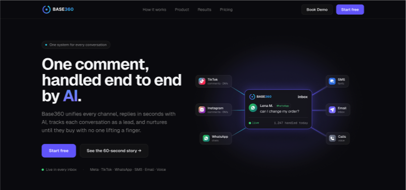
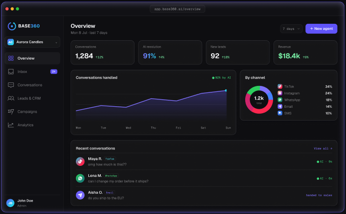
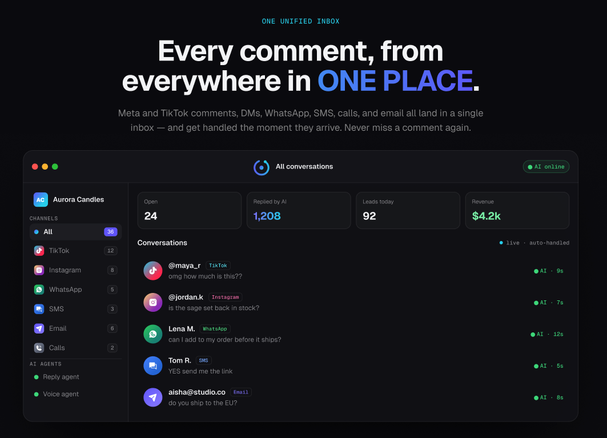

One comment,
handled end to end
Base360 unifies every channel (Meta and TikTok comments, DMs, WhatsApp, SMS, email and calls) replies in seconds with AI, tracks each conversation as a lead, and nurtures it until they buy.
Every conversation, one system
Comments, DMs and messages arrive faster than any team can answer them, and each unanswered one is a lost sale. Base360 puts every channel in a single inbox and lets AI agents handle the first reply.
I designed the product story and the console around one loop: capture the message, reply in seconds, turn it into a tracked lead, then nurture it through campaigns. The landing page makes that loop visible in a single diagram; the app makes it operable.
I owned the marketing site and the product UI: the channel-routing diagram, the unified inbox, the analytics overview and the agent configuration screens.
Positioning, product and build
One queue for six channels, with per-channel badges, AI response times and a live auto-handled state.
Conversations handled, AI resolution rate, new leads and revenue on one glanceable dashboard.
A landing page that shows the routing diagram first, so the value lands before the feature list.
Built the site and console shell in React, dark theme, channel iconography and data visualisation.

Console
From comment to customer
The site sells the loop; the console runs it: capture, reply, track, nurture.
Six channels feed into one inbox in a single diagram, the product explained before scrolling.
Conversations handled over time, split by channel, with recent threads and their AI response times.

TikTok and Instagram comments, WhatsApp, SMS, email and calls in one queue, each handled the moment it arrives, with reply and voice agents online.
Built to answer first
AI reply agents answer comments and DMs on arrival, with humans taking over on request.
Meta, TikTok, WhatsApp, SMS, email and voice normalised into a single conversation model.
Every thread becomes a tracked lead with source, stage and value attached automatically.
Follow-ups keep running after the first reply, until the conversation converts.